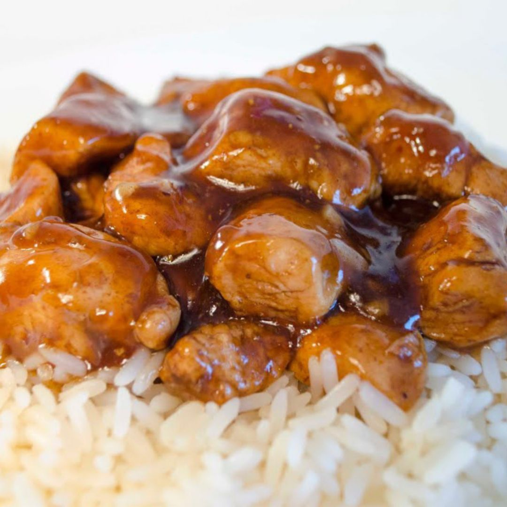

Pollo a la Miel

Descripción
Pollo a la Miel es un plato lleno de sabor riquisimo. Es uno de los platos preferidos del principe patigatito!
Es un gran plato para preparar en una ocasion especial o para malcriarse!
ES RIQUSIMO!
Ingredientes:
- 3 pechugas de pollo
- 1 cucharada de miel
- 2 cucharadas de salsa de soja
- 1 cucharada de ajo picado
- 1/2 cebolla mediana
- 1/2 cucharadita de sal
- 1/4 cucharadita de pimienta
- 1/4 cucharadita de jengibre
Pasos:
- En un tazón, mezcla la miel, la salsa de soja, el ajo, la cebolla, la sal, la pimienta y el jengibre
- Cocina el arroz en una olla con 2 tazas de agua y una pizca de sal. Lleva a ebullición, luego cubre y reduce el fuego. Cocina durante 15-20 minutos o hasta que el arroz esté listo
- Corta las pechugas de pollo en trozos pequeños o en tiras
- Salpimienta el pollo al gusto
- Calienta una sartén grande con un poco de aceite de oliva a fuego medio-alto
- Cocina el pollo en la sartén durante 5-7 minutos hasta que esté dorado y cocido por dentro. Retíralo y resérvalo
- En la misma sartén, agrega el ajo picado y sofríelo por 1 minuto
- Añade la miel, la salsa de soja y la mostaza. Revuelve bien y deja que la salsa hierva durante 2-3 minutos hasta que espese un poco
- Vuelve a poner el pollo en la sartén con la salsa y mezcla bien para que el pollo quede cubierto por la miel. Cocina durante 2-3 minutos adicionales
Home